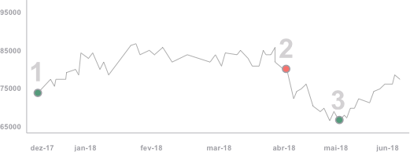

Nossas previsões para 2018 são positivas. Entenda porquê.
PRA ASSISTIR
Veja nosso resumo
PRA LER
Veja abaixo o relatório detalhado
O que aconteceu
até hoje
Greve dos caminheiros
Mesmo que as consequências da greve tenham sido temporárias (a produção industrial recuou 10,9% em maio comparado
ao mês anterior à greve), a paralisação trouxe à tona um problema maior: a fragilidade do nosso ambiente macroeconômico,
com impactos muitos mais relevantes e profundos na percepção de risco do investidor e no sentimento do consumidor.
A greve não foi a causa da piora das projeções para o PIB de 2018, mas sim uma espécie de “gatilho” após outras
incertezas se acumularem.
Fluxo de Capitais
Mesmo que as consequências da greve tenham sido temporárias (a produção industrial recuou 10,9% em maio comparado
ao mês anterior à greve), a paralisação trouxe à tona um problema maior: a fragilidade do nosso ambiente macroeconômico,
com impactos muitos mais relevantes e profundos na percepção de risco do investidor e no sentimento do consumidor.
A greve não foi a causa da piora das projeções para o PIB de 2018, mas sim uma espécie de “gatilho” após outras
incertezas se acumularem.
Guerra Comercial
Tarifas americanas sobre US$ 34 bilhões em produtos chineses entraram em vigor recentemente, sinalizando o início
de uma disputa comercial entre as duas maiores economias do mundo. A tarifa de 25% aplicada pelos Estados Unidos
provocou retaliação imediata da China e o país asiático impôs uma sobretaxa idêntica sobre 545 produtos americanos,
que também somam um total de US$ 34 bilhões.
Mercados
Mesmo com obstáculos, estamos em um momento global de crescimento disseminado como não se via há muito tempo. Países
emergentes apresentam expansão do PIB acima dos 6% ao ano, enquanto grandes economias desenvolvidas têm expansão
acima dos 2%. As decisões de políticas monetárias, que podem alterar a quantidade de dinheiro em circulação, na
Europa e nos Estados Unidos são as principais variáveis. Discussões comerciais entre países e outras tensões acabam
gerando ruído, mas no momento vemos impactos limitados para Brasil.
Como se comportaram
as ações no Brasil

|